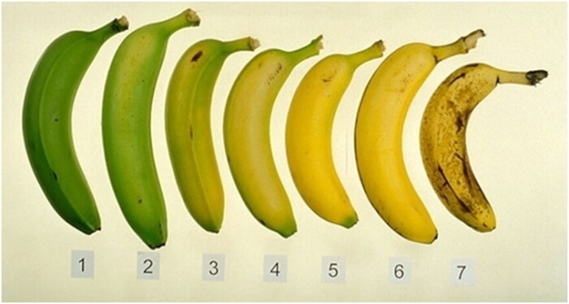
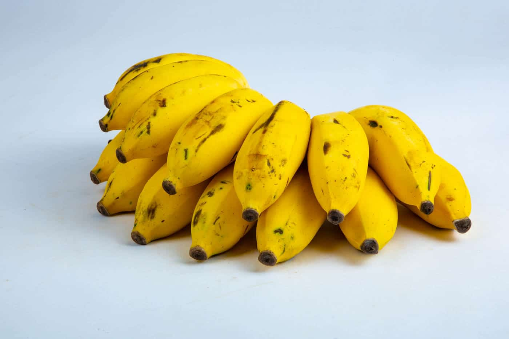
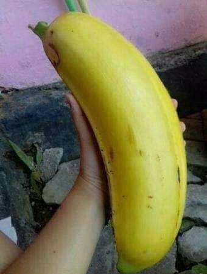
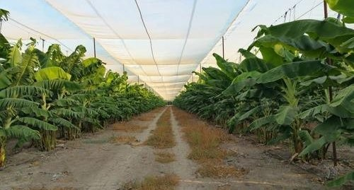
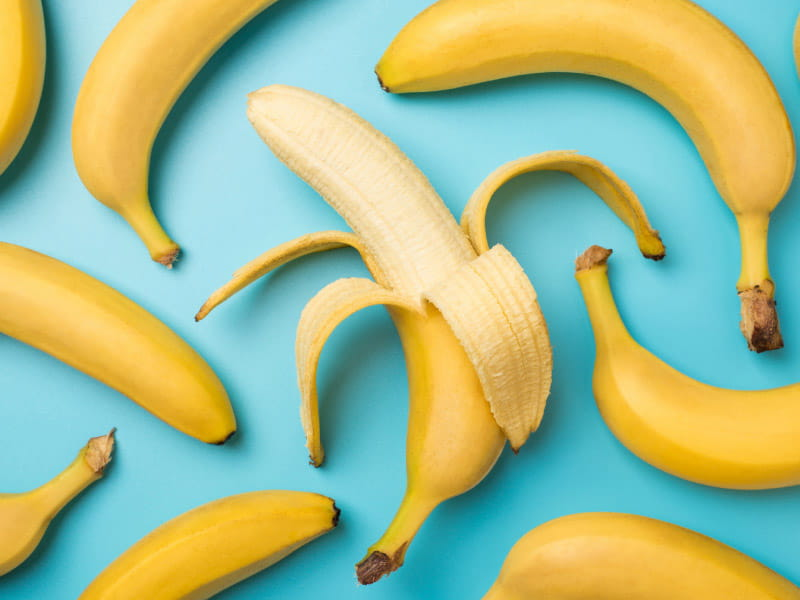
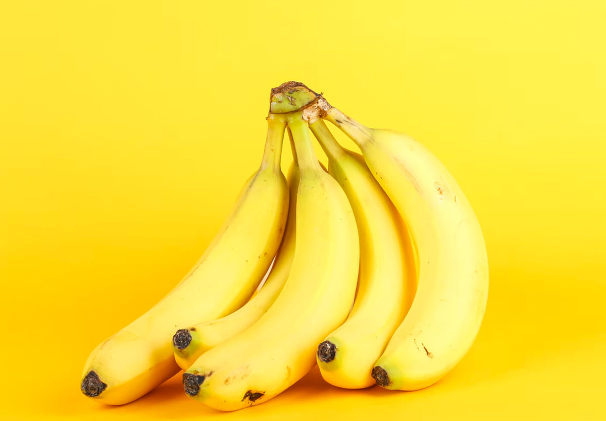
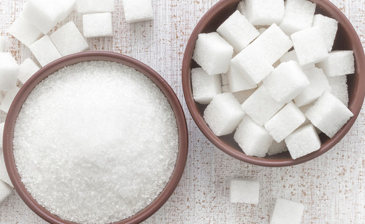

Are bananas OK to eat every day?
For most healthy people, bananas are a tasty, nutritious fruit. But it's best to just eat one or two a day, as too many could lead to weight gain and nutrient deficiency. Eating a balanced diet is key for optimal health. Bananas are an incredibly popular fruit — and it's no wonder why.

Banana in israel
About 70% of Israel's banana crop is grown in the Northern R&D region. Banana-growing activity takes place in two growing regions – the Jordan Valley and the Western Galilee, each of which has unique growing characteristics.

The best banana in the world
The best bananas are often said to come from tropical regions such as Southeast Asia, Latin America, and the Caribbean. Firstly bananas are produced in tropical and in warm countries and all these countries produce different kind varieties of bananas with different taste of course.

Do banana trees grow in Israel?
Between 150,000 and 170,000 tons of bananas are picked annually across plantations spanning some 6,700 acres (27,000 dunams). The majority of Israel's banana plantations are located in the north, in the Carmel region and the Jordan Valley, and there are smaller plantations in the south.

Which country eats the most bananas?
As of 2023, Uganda is the world's leader when it comes to per capita banana consumption. On average, each Ugandan eats an average of 660 pounds of bananas each year. However, the country's bananas are also used to create other food items, including a unique wine made from bananas.
What are the 3 benefits of eating a banana?
Other than being rich in vitamin B6, bananas are a good source of vitamin C, dietary fibre and manganese. Bananas are also fat-free, cholesterol-free and virtually sodium-free.

What happens if I eat a banana everyday?
Bananas are healthy, delicious, and versatile fruits. They're full of nutrients that could help prevent constipation, improve digestive and gut health, and promote recovery from intense activity. Eating one banana per day will provide: 12% of the DV for vitamin C.

Is a banana a day too much sugar?
One medium banana (about 126 grams) contains 29 grams of carbs and 112 calories. The carbs are in the form of sugar, starch, and fiber ( 3 ). A medium banana contains about 15 grams of sugar ( 3 ). Bananas do contain simple carbs, which can cause blood sugar levels to rise more than other nutrients.
